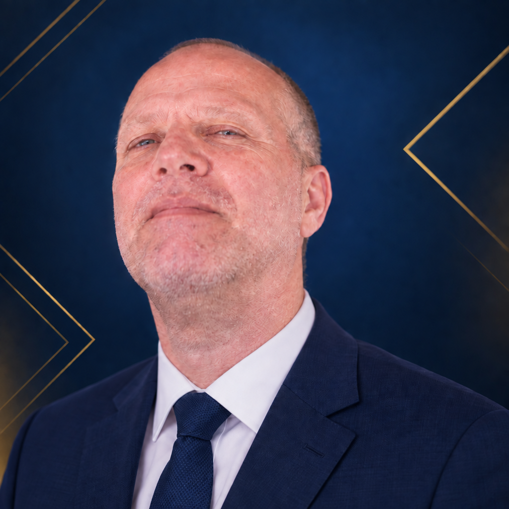

Transformando a Missão em Processo, Estratégia e Expansão do Reino de Deus
"Ide por todo o mundo, pregai o evangelho a toda criatura." — Marcos 16:15
Por Dr. Antonio Orlando Izolani
Licenciatura Plena em Química • Mestre em Química Inorgânica • Doutor em Geoquímica Ambiental
A evangelização sempre foi a principal missão da Igreja. Hoje, ela exige organização, planejamento e comunicação estratégica. Este e-book propõe aplicar princípios de engenharia, gestão de processos e estratégia organizacional à missão evangelística, sem secularizar a soberania de Deus.
O objetivo é alcançar eficácia operacional, sustentabilidade, rastreabilidade relacional e capacidade de expansão para alcançar mais vidas com fidelidade bíblica.
Pastores e líderes que querem organizar a missão com método e responsabilidade.
Equipes de evangelismo, discipulado e comunicação digital.
Quem busca a interseção entre fé, gestão e propósito.
A Engenharia de Evangelização se apoia em oito eixos vitais do ministério:
Da segmentação de público à multiplicação ministerial.
Planejamento, comunicação, discipulado, tecnologia e gestão de pessoas.
Como atuar em cada canal com clareza e responsabilidade.
Usos práticos e limites éticos inegociáveis.
Indicadores espirituais e organizacionais para acompanhar a missão.
Compliance, proteção de dados e modelos de governança integrada.
Logística de pré-produção, execução e pós-evento.
Etapas da decisão de fé e comunicação respeitosa.
Cocriação e cooperação entre congregações.
Apêndice: Checklist Prático de Implantação
Também inclui: Conclusão e Referências Bibliográficas
Um diferencial prático do livro: um roteiro para auditar e implantar as práticas em sua comunidade, organizado em três eixos.

Dr. Antonio Orlando Izolani é Licenciado em Química, Mestre em Química Inorgânica e Doutor em Geoquímica Ambiental, pesquisador, educador e desenvolvedor de projetos cristãos e educacionais. Com sólida formação interdisciplinar, tem dedicado sua trajetória intelectual e ministerial à convergência construtiva entre metodologia científica, engenharia de processos, inovação tecnológica e o compromisso irrenunciável com a proclamação das Escrituras Sagradas. Atua ativamente na instrumentalização de líderes e comunidades de fé para a expansão sustentável e ordenada da missão do Reino de Deus.
Organize a missão com processo, estratégia e fidelidade bíblica.
Adquirir o e-book